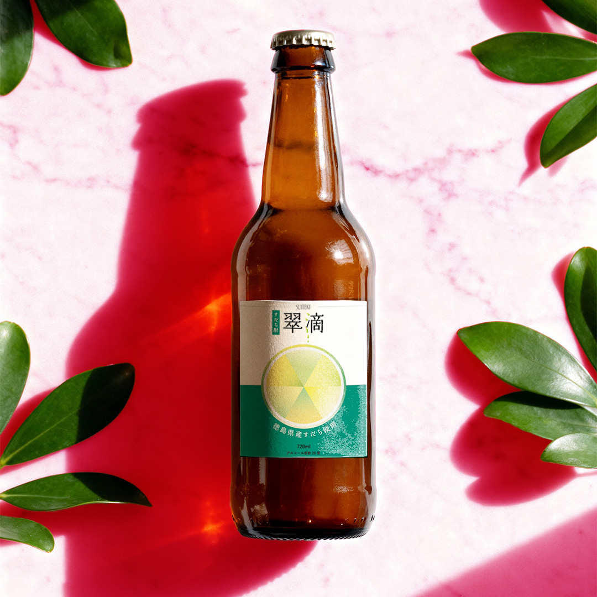
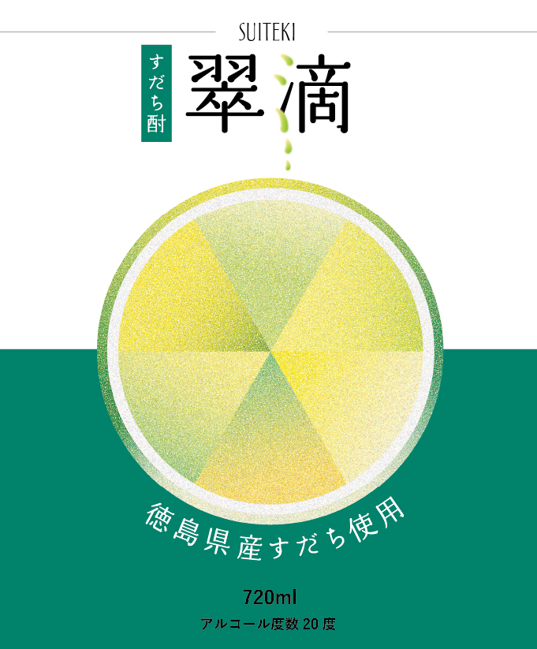

【コンセプト】
架空のすだち酎「翠滴」のラベルデザインを制作しました。
爽やかさ・清潔感・程よいモダンさを意識し、20代の若年層からも支持を得られるデザインを目指しました。
すだちの断面をイラストで表現し、グラデーションを使用することで、現代的な印象を加えています。カラーはすだちのグリーンを基調に、白と黒に絞ることで統一感を出し、フレッシュさが伝わる配色としました。
商品名でもある「滴」は、漢字のさんずいをしずくに見立てた表現にすることで、すだちのしずる感を視覚的に伝えています。
【制作プロセス】
すだちの断面にはグラデーションや粒状の加工を施し、色の切り替えを意識することで、写真に頼らないモダンな表現にしました。「滴」のさんずい部分にはすだちと同じグラデーションを使用し、軽くぼかしを入れることでしずる感を表現しました。
ジュースではなくお酒としての印象を持たせるため、背景のグリーンは落ち着いた濃い色味を選定しています。背景に白も取り入れることで文字の可読性を高めるとともに、余白を活かしたすっきりとしたデザインを意識しました。
【ターゲット】
20〜40代の方
徳島土産として購入する観光客
自宅で炭酸割りを楽しむ層
【制作目的】
新たな徳島の名産の土産品として購入していただくことを目的としています。また、新しいブランドとして徳島の認知度向上につながることを意識しました。
【使用ツール】
Illustrator/Photoshop
【制作期間】
約3.5時間
【サイズ】
240×290㎜